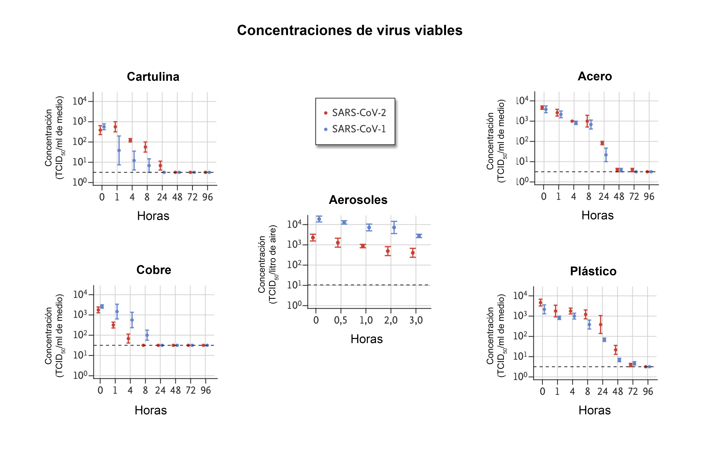
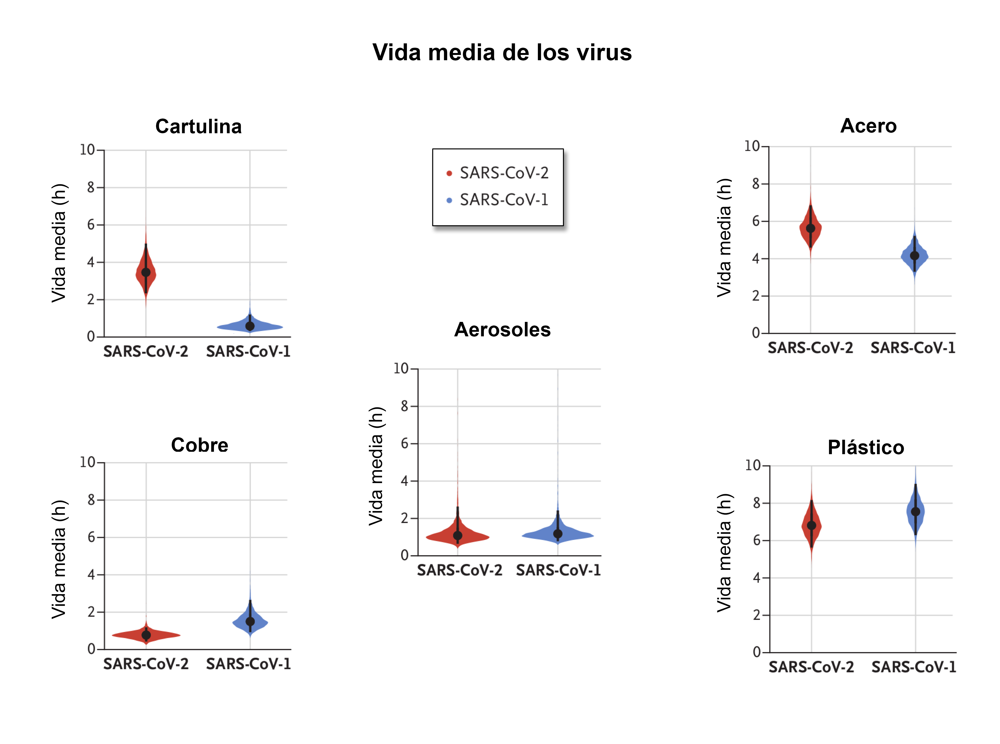
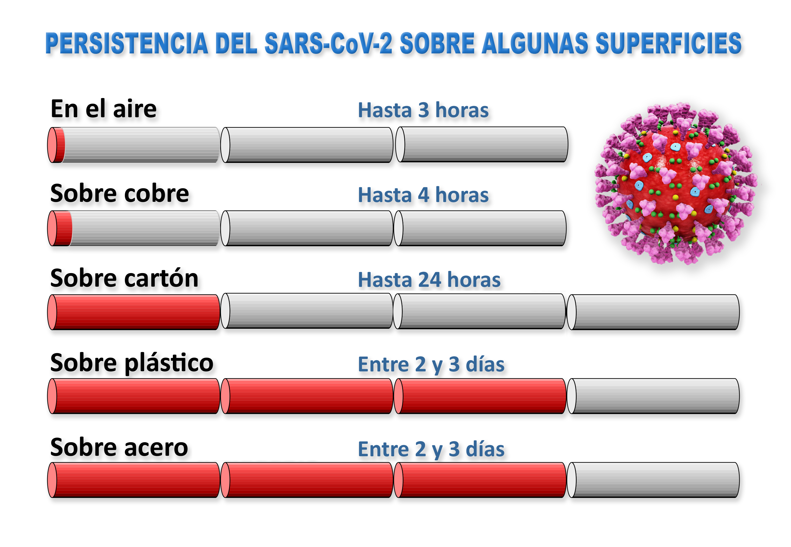

El coronavirus SARS-CoV-2 también se transmite a través de objetos
El penúltimo debate sobre la capacidad infecciosa del virus SARS-CoV-2, que causa la actual enfermedad pandémica COVID-19, es su capacidad potencial para permanecer viable durante varias horas o incluso días en superficies rígidas, desde las cuales podría transmitirse.
La principal vía de transmisión directa de los coronavirus es a través de las diminutas gotitas de Flügge (mayores de 5 micras), expelidas al hablar, toser y estornudar, que no permanecen en el aire y se depositan inmediatamente en las superficies o en el suelo.A partir de ahí, de forma indirecta, el coronavirus puede transmitirse a través de las manos o de objetos recientemente contaminados.
La transmisión entre humanos de otros virus, como el gripal, también puede producirse a través de aerosoles de pequeño tamaño (por las gotículas de Wells, menores de 5 micras).Este mecanismo parece tener mucha menor implicación en la transmisión, salvo en ciertas circunstancias como en ambientes con una inadecuada ventilación.
Es importante recordar que para que el virus pueda actuar debe tener acceso a nuestro cuerpo a través de las mucosas, especialmente de las que están más expuestas al exterior (ojos, nariz y boca).El virus no tiene posibilidad alguna de atravesar la piel y de ahí el consejo de lavarse las manos continuamente dada nuestra imparable tendencia a tocarnos consciente o inconscientemente ojos, nariz y boca.Un hábito que, según indica un estudio, repetimos cada dos minutos y medio.
Ahora bien, si sabemos con toda seguridad que la transmisión es por vía aérea ¿qué ocurre cuando el virus procedente de un simple estornudo cae sobre una superficie más o menos dura que podemos tocar en cualquier momento?
Un artículo de correspondencia publicado el pasado 18 de marzo en la revista
The New England Journal of Medicine intenta despejar las dudas.
La investigación se ha basado en la comparación del comportamiento en aerosoles y superficies rígidas del SARS-CoV-2 y del coronavirus humano más estrechamente relacionado, el SARS-CoV-1.Este, antecesor del que ahora circula por todo el mundo, surgió también en China y acabó con la vida de más de 8 000 personas en 2002 y 2003.Fue erradicado por el mismo protocolo epidemiológico que se está utilizando ahora: el rastreo intensivo de contactos y medidas de aislamiento de infectados.El método dio buenos resultados y no se han detectado nuevas infecciones desde 2004.
Utilizando dispositivos nebulizadores que simulaban las gotas creadas al toser o estornudar, los investigadores comprobaron cuánto sobrevivió el virus en cinco condiciones ambientales distintas (aerosoles, plástico, acero, cobre y cartulina) y estimaron sus tasas de descomposición utilizando un procedimiento estadístico bayesiano.
En las gráficas de las Figuras 1 y 2, que hemos simplificado a partir de la publicación original, puede verse que tanto el SARS-CoV-2 como su antecesor permanecieron viables en aerosoles durante las tres horas de duración del experimento, con una ligera reducción en la concentración infecciosa por litro de aire (Fig. 1).
El SARS-CoV-2 resultó más estable en el plástico y en el acero que en el cobre y en la cartulina, y se detectó una capacidad infecciosa viable de hasta 72 horas después de la aplicación en esas superficies, aunque la concentración del virus se redujo considerablemente después de esos tres días tanto en plástico como en acero.
En la cartulina no había rastros de SARS-CoV-2 viable después de 24 horas ni de SARS-CoV-1 transcurridas ocho horas.
El comportamiento inhibidor del cobre fue radical.En el medio con cobre no había SARS-CoV-2 viable después de cuatro horas y tampoco de SARS-CoV-1 después de ocho horas.La acción antivírica del cobre no debe sorprendernos habida cuenta del desarrollo de recientes investigaciones clínicas sobre el poder antivírico de las nanopartículas metálicas en la lucha contra varios coronavirus.
Ambos virus tuvieron una disminución exponencial de su concentración en todas las condiciones experimentales, como lo indica una disminución lineal por litro de aire o por mililitro de medio con el tiempo (Fig. 2).La vida media del SARS-CoV-2 y del SARS-CoV-1 fue similar en aerosoles, con estimaciones medias de aproximadamente 1,1 a 1,2 horas.
La vida media de los dos virus también fue similar en el cobre.En cartulina, la vida media de SARS-CoV-2 fue más larga que la del SARS-CoV-1.La vida media estimada del SARS-CoV-2 fue aproximadamente de 5,6 horas en acero y de 6,8 horas en plástico.
La estabilidad del SARS-CoV-2 resultó similar a la del SARS-CoV-1 en las circunstancias experimentales probadas.Esto indica que las diferencias en las características epidemiológicas de estos virus probablemente surgen de otros factores, incluidas las altas cargas virales en el tracto respiratorio superior y la posibilidad de que las personas infectadas con SARS-CoV-2 eliminen y transmitan el virus mientras están asintomáticos.
En este sentido, es importante recordar que no hay respuestas iguales en pacientes diferentes.No es lo mismo 'afectado' que 'infectado'.Un 80 % de las personas contagiadas son asintomáticas, lo que quiere decir que usted o yo, que aparentemente estamos sanos, podemos ser resistentes al virus y ser asintomáticos, pero eso no impide que podamos ser transmisores.
Por tanto, como en promedio una persona puede contagiar a otras tres y cada una de esas tres contagia a otras tres y así sucesivamente en un perfecto ejemplo de crecimiento exponencial, uno puede contagiar a cualquiera y ser contagiado por cualquiera por muy sanos que parezcamos.De ahí la importancia del confinamiento en nuestros domicilios.Cada vez que dejamos de salir a lugares públicos, trillones de virus se quedan sin una víctima potencial y, sobre todo, sin un peligroso transmisor: usted o yo.Deje de contar las bajas en nuestras filas y calcule como, con no salir a la calle, causa trillones de bajas en las filas enemigas.Si lo hace, se sentirá mucho mejor.
Por lo demás, los resultados indican también que, además de por vía directa, la transmisión de SARS-CoV-2 también es posible a partir de objetos inertes de uso cotidiano, ya que el virus puede permanecer viable e infeccioso durante horas (en aerosoles) y en superficies (durante días).
Esos resultados vienen a recordarnos que, además de la transmisión directa desde una persona infectada que bien pudiera ser asintomática, el SARS-CoV-2 se transmite también a partir de objetos de uso cotidiano en los que el virus puede permanecer mucho más tiempo que en el aire.
En ese sentido, la eficacia biocida contra los coronavirus de la lejía común ha sido científicamente demostrada a principios de este año y recomendada para su empleo en hospitales.
La sorprendente supervivencia del virus debería alertarnos también sobre la gran concentración de ellos en el suelo, la importancia de pasar la fregona y la de emplear siempre el mismo calzado para salir de casa evitando su uso dentro de la vivienda.Cuando traigan cosas del súper, tengan preparado un paño humedecido con lejía y lo pasan por los productos y por las superficies en los que los hayan depositado.Eso es suficiente.
En el caso de los zapatos, procuren usar siempre los mismos para salir a la calle y, después de pasarles un trapo húmedo con lejía, déjenlos en un sitio apartado (una terraza, por ejemplo).Adoptar esas precauciones junto con el uso de guantes en lugares con concentración o paso de personas, seguido del desecho o del lavado con lejía después de usarlos y el lavado periódico y cuidadoso de las manos con jabón después de haber salido a lugares públicos, son medidas profilácticas elementales para no resultar infectado.
Posted On: 2020-03-29T13:27:00
Posted By: Luis Monje




Content Date: 2020-03-29
Download Date: 2021-04-08
Document ID: L0C049IZQ